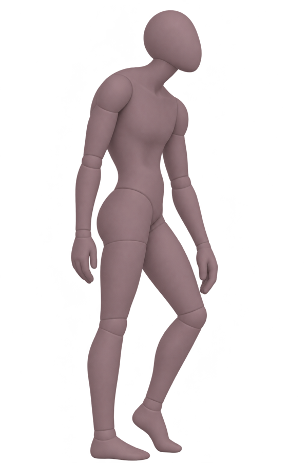
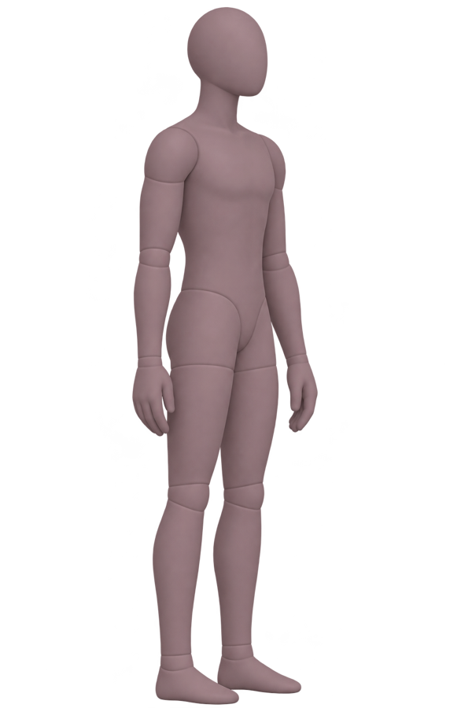
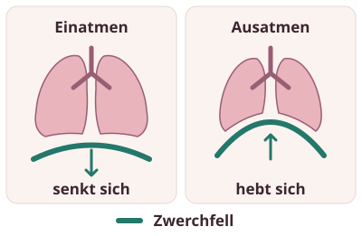

Einstieg
Was dieser Kurs macht.
Dieser Kurs führt in das Singen als musikalische und körperliche Tätigkeit ein. Du lernst, wie Atem, Stimmapparat und Mundraum beim Singen zusammenarbeiten.
Unser Ziel ist es eine stabile Note zu produzieren und anhand dieser eine Referenz für weitere Noten zu erzeugen.
Der Baum des Singens
Ein Gedanke ist der Samen. Aus Wahrnehmung, Verständnis und Übung wächst, was du beim Singen mit deinem Körper ausführen kannst.
- Atem, Stimme und Mund koordinieren Eine Phrase im Rhythmus singen und den Text formen
- Den Klang mit dem Mundraum formen Lippen, Zunge, Kiefer und weichen Gaumen bewegen
- Den Ton verändern Höher, tiefer, leiser und lauter singen
- Die Stimme einsetzen Stimmlippen annähern und den Ausatemimpuls dosieren
- Die Atembewegung dosieren Atemmuskulatur und Beckenboden sanft anspannen und loslassen
- Den Atem frei fließen lassen
- WahrnehmungAtem, Spannung und Bewegung spüren
- VerständnisExpansion, Kontraktion und subglottalen Druck einordnen
- Fähigkeiten im AufbauBewegungen ausprobieren und wiederholen
Die Atemmuskulatur liefert den Ausatemimpuls. Wenn sich die Stimmlippen annähern, bieten sie der Luft Widerstand. So kann sich unter ihnen subglottaler Druck aufbauen und ein Ton entstehen.
Hier siehst du „Des Sängers Mischpult“ mit den Reglern, die du verstehen und bedienen können musst, um eine stabile Note zu produzieren. Der Kippschalter oben rechts schaltet das Cockpit ein und aus.
Des Sängers Mischpult
M steht für manuelles Einstellen. A wählt den geplanten Automatikmodus für gekoppelte Regler.
Manuelle Bedienung ausprobieren ↗Schaltet das Mischpult und seine Bedienelemente ein oder aus.
Mischpult in der Einführung ausprobieren ↗Das Display zeigt den Status. In Übungen gibt es Rückmeldung zu deinen Einstellungen.
Display in der Luftstromübung ausprobieren ↗Die Anzeige begleitet Ein- und Ausatmen. Mit dem Kippschalter startest oder stoppst du den Zyklus.
Freien Luftstrom wahrnehmen ↗Der Regler steht dafür, wie leise oder laut du einen Ton singst.
Lautstärke behutsam verändern ↗Der Regler zeigt das Modell von freiem Luftstrom bis zu stärkerem Druck. Die Lampen zeigen den Druckpegel und die Grafik zeigt den Stimmlippenschluss.
Luftstrom auf S und F üben ↗Druck wahrnehmen und lösen ↗
Stimmlippenschluss erkennen ↗
Vergleiche einen eher nasalen mit einem eher oralen Klang.
Vokale vergleichen ↗Mit dem Fader stellst du dar, wie du einen Ton anhebst oder absenkst.
Mit dem Stimmtrainer üben ↗Kapitel 01
Haltung
Eine gute Haltung verhindert unnötige Spannungen und erhöht dein Selbstbewusstsein. Beides hilft beim Singen.
Die Haltung ausrichten
- Wofür?
- Freier Atem und freie Stimme.
- Ziel
- Locker und aufrecht stehen.




-
Füße
Füße schulterbreit, Gewicht gleichmäßig verteilen, Knie locker lassen.
-
Becken
Becken neutral bis leicht nach vorn, ohne Hohlkreuz. Zum Spüren mit beiden Händen sanft gegen eine Wand drücken und weiteratmen.
-
Brustkorb
Richte dich auf, als würde ein Laser vom Solarplexus schräg nach oben zeigen.
-
Schultern
Schultern locker sinken lassen, ohne sie nach vorn zu runden oder nach hinten zu ziehen.
-
Kopf
Eine gedachte Schnur zieht den Scheitel sanft nach oben. Kinn locker, Blick geradeaus.
Glückwunsch! Du kannst deine Haltung selbstständig fürs Singen ausrichten.
02 · Ein Lernmodell
Die drei Abteilungen der Gesangsfirma.
Als Denkmodell teilen wir die Arbeit beim Singen in drei Bereiche ein. Sie arbeiten immer gemeinsam; die Abteilungen sind keine voneinander unabhängigen Teile. Jede Abteilung bekommt eine eigene Lektion.
- PumpeRumpf und Beckenboden POWER
- StimmboxHals und Stimmapparat TONHÖHE
- MaskeGesicht und Mund KLANG
Lektion 01 · Abteilung 01
Die Pumpe
Hier erkundest du Atembewegung und die Dosierung des Ausatmens. Zwerchfell, Brustkorb, Bauch- und weitere Atemmuskeln arbeiten dabei zusammen. Der Beckenboden bewegt und koordiniert sich mit der Atmung; er ist aber kein einfacher Regler, der das Zwerchfell direkt steuert.
Beim Singen erzeugt die Atemmuskulatur Druck, während die angenäherten Stimmlippen dem Luftstrom Widerstand entgegensetzen. So baut sich unter den Stimmlippen subglottaler Druck auf. Im Gesangsunterricht nennt man das Zusammenspiel, mit dem du Atemdruck und Luftstrom dosierst, oft Stütze oder Support.
Übung 1 · Kontraktion, Entspannung und Expansion
- Wofür?
- Anspannen, Loslassen und Weiten unterscheiden.
- Ziel
- Rumpf und Beckenboden sanft bewegen und frei atmen.
- Probiere jede der drei Bewegungen neben der passenden Animation fünfmal.
- Atme frei weiter und übe außerhalb des Toilettengangs.
Kontraktion und Entspannung. Spanne den Beckenboden leicht an, wie beim Zurückhalten von Darmgas. Lass dann wieder los.
Expansion. Lass den Bauch sanft weiter werden und stell dir vor, wie der Beckenboden nach unten nachgibt. Kehre dann zur Ausgangslage zurück.
Beides zusammen. Lass den Bauch oder die unteren Rippen sanft weiter werden und spanne zugleich den Beckenboden leicht an. Bei mehr Atemdruck kann leichte Anspannung die Weitung begrenzen. Setze das sparsam ein. Wird es unangenehm oder stockt der Atem, lass los.
Übung 2 · Luftstrom auf S und F
- Wofür?
- Unterschiedlichen Atemdruck spüren.
- Ziel
- Luftstrom gleichmäßig halten, Atemdruck verändern
i
- Tief, Mittel, Hoch
- Die Tonlage, die du dir beim Durchgang vorstellst.
- Anweisung
- Oben steht die aktuelle Phase. Darunter siehst du, was als Nächstes kommt.
- Zählkästchen
- Sie zählen 1–2–3–1–2. Das Metronom betont beide Einsen.
- Fortschrittsbalken
- Er zeigt, wie weit du in der Phase bist. Einatmen und Halten teilen sich einen Balken.
- Luftpfeil
- Er zeigt beim Einatmen zur Lunge und beim Ausatmen nach außen.
- Tutorial, Start und Stopp
- Das Tutorial führt zur Anleitung. Danach kannst du die Übung starten oder stoppen.
Erklärung
So geht’s.
- Drücke Start.
- 5 s Einzähler erklingt
- 3 s einatmen
- 2 s halten
- 5 s auf S ausatmen und dir eine tiefe Note vorstellen
- 10 s durchatmen
Mach drei Durchgänge. Stell dir jedes Mal eine etwas höhere Note vor und erhöhe den Atemdruck leicht.
Halte den Luftstrom so gleichmäßig wie möglich.
Führe die Übung danach mit F statt S aus.
Wichtig:
- Beginne mit wenig Druck.
- Spüre die Expansion im Beckenboden und Bauch.
- Wenn du viel Druck aufbringst, kannst du übermäßiger Expansion durch Kontraktion entgegenwirken.
Übung 3 · Impulse und Ausschütteln
- Wofür?
- Spüren, wie der Rumpf auf Atemimpulse reagiert.
- Ziel
- Kurze Laute bei freiem Atem bilden.
- Sprich P – T – K fünfmal ruhig und klar.
- Wiederhole es mit leicht stabilisiertem Rumpf. Atme frei weiter.
- Probiere beide Varianten mit F – S – SCH. Schüttle danach Arme und Schultern aus.
Druck, Luftstrom und Muskelaktivität
Erklärung
Vergleiche einen kurzen Luftstoß mit einem gehaltenen Reibelaut.
- Ausatemdruck
- Luftstrom
- Aktivität der Ausatemmuskulatur
Vereinfachte Lehrmodelle. Die Kurven sind schematisch, ohne Messdaten. Die Prozentwerte sind für jede Größe unabhängig skaliert. 100 % steht für den oberen Rand der jeweiligen Beispielskala, nicht für maximale körperliche Belastung.
- Vorbereitung. Die Ausatemmuskulatur wird aktiv. Der Mundverschluss hält die Luft zurück. Der Druck steigt, während der Luftstrom nach außen bei null bleibt.
- Verschlusslösung. Der Mundverschluss öffnet sich. Luft strömt schlagartig aus, der Druck sinkt und die Ausatemmuskulatur bleibt zunächst aktiv.
- Luftstoß. Der Luftstrom erreicht kurz seinen Höhepunkt. Der Druck sinkt weiter, danach lässt auch die Muskelaktivität nach.
- Entspannung. Der Luftstrom endet. Der Druck kehrt zur Ausgangslage zurück und die Ausatemmuskulatur entspannt sich weitgehend.
- Beginn. Im Mund bleibt eine enge Öffnung. Die Ausatemmuskeln werden aktiv und Druck und Luftstrom bauen sich gleichzeitig auf.
- Laut halten. Die Luft strömt weiter durch die Engstelle. Druck, Luftstrom und Muskelaktivität bleiben ungefähr gleichmäßig.
- Ende. Beim Beenden des Lauts gehen alle drei Größen in Richtung Ausgangsniveau zurück.
Was zeigen die drei Kurven?
- Muskelaktivität
- Wie stark arbeitet die Pumpe?
- Luftdruck
- Wie stark drückt die Luft gegen einen Widerstand?
- Luftstrom
- Wie viel Luft strömt pro Augenblick nach außen?
Die drei Größen hängen zusammen. Bei geschlossenem Mundverschluss kann Muskelarbeit Druck aufbauen, obwohl keine Luft nach außen strömt. Gibt der Verschluss nach, strömt Luft aus. Durch eine Engstelle kann sie strömen, während Druck bestehen bleibt und die Ausatemmuskeln weiterarbeiten.
Wie arbeiten die Abteilungen zusammen?
- Pumpe
- Erzeugt den Ausatemdruck.
- Stimmbox
- Die Stimmlippen können dem Luftstrom Widerstand bieten.
- Maske
- Lippen, Zunge und andere Artikulationsorgane können den Luftweg verengen oder verschließen.
Bei P, T und K entsteht der entscheidende Verschluss im Mundraum. „Ausatemdruck“ bezeichnet hier allgemein den Druck beim Ausatmen. „Subglottal“ würde nur den Druck unter den Stimmlippen bezeichnen.
Wichtig: Die Übung soll Wahrnehmung schulen, nicht Kraft oder Druck maximieren. Beende sie bei Schmerz, Schwindel oder unangenehmem Druckgefühl.
Druckerzeugung · Zusammenspiel mit der Stimmbox
Bei den stimmlosen Lauten S und F liefert die Pumpe den Ausatemdruck. Den Widerstand erzeugt die Maske: Beim S verengt die Zunge den Luftweg, beim F die Unterlippe an den oberen Schneidezähnen. So entsteht Druck sowohl unter den Stimmlippen (subglottal) als auch darüber im Vokaltrakt (supraglottal).
Du hast jetzt gespürt, wie sich Atemdruck anfühlt. In der nächsten Lektion lernst du, wie die Stimmbox den Luftstrom reguliert und wie der Druck unter den Stimmlippen ihre Schwingung beim Singen von Vokalen antreibt. Zur Übung „Druck wahrnehmen und lösen“ ↓
Glückwunsch! Du kannst deinen Luftstrom dosieren und weißt, wie Pumpe und Stimmbox zusammenspielen.
Lektion 02 · Abteilung 02
Hals und Stimmapparat.
Der Hals und der Stimmapparat helfen dir, Tonhöhen zu erzeugen und zu treffen. Im Kehlkopf liegen die Stimmlippen. Die ausströmende Luft versetzt sie in Schwingung; dadurch entsteht der stimmhafte Grundklang. Veränderungen ihrer Spannung, Länge und Schwingungsweise ermöglichen unterschiedliche Tonhöhen.
Der Stimmapparat arbeitet mit dem Rumpf und dem Beckenboden zusammen: Die Atembewegung liefert den Luftstrom und unterstützt den Klang; die Stimmlippen schwingen und regulieren den Luftstrom; Mund und Rachen formen anschließend den Klang weiter. Der Hals soll dabei nicht durch Pressen den Atemdruck erzeugen.

Erkundung · Was kannst du schon?
Erkunde die Unterschiede leise, ohne Kraft und in bequemer Lage. Bei Schmerz, Kratzen oder Pressen pausiere und kehre zurück zu deiner bequemen Sprechstimme.
1 · Freien Luftstrom wahrnehmen
- Wofür?
- Freies Ausatmen als Vergleich zum Stimmlippenschluss.
- Ziel
- Luftstrom ohne Stimmton wahrnehmen.
- Atme ein paarmal ruhig und angenehm tief.
- Atme mit locker geöffnetem Mund aus. Spüre, wie frei die Luft bei geöffneten Stimmlippen fließt und wie wenig Druck du im Hals und Rumpf bemerkst.

Stell Lautstärke und Luftstrom / Luftdruck so ein, wie es zu deinem freien Ausatmen in der Übung passt.
Des Sängers Mischpult
Dreh beide Regler ganz nach links. Lautstärke auf 0, Luftstrom / Luftdruck auf 100 % Luftstrom.
Die letzte Übung hat zwei Regler berührt: Luftstrom und Lautstärke. Die Anzeige unten zeigt deinen Atemzyklus. Für einen Ton brauchen wir Luftdruck. In den nächsten drei Übungen lernst du, die Stimmlippen zu spüren und darunter Druck aufzubauen. Damit kannst du Luftstrom und Lautstärke gezielt steuern.
Stimmlippenschluss im Alltag erkennen
- Wofür?
- Den Stimmlippenschluss im Alltag wiedererkennen.
- Ziel
- Den kurzen Atemstopp und das anschließende Öffnen spüren.
- Beobachte in der Draufsicht, wie sich die Stimmritze schließt.
- Probiere „Oh-oh!“ und den sanften Atemstopp aus der Liste. Lass die Taschenfalten locker.

- Sag leise „Oh-oh!“ und achte auf den kurzen Stopp zwischen den Silben. Dieser kurze Stimmlippenschluss heißt Glottisschlag.
- Halte den Atem für einen Moment sanft an. Mund und Nase bleiben frei.
- Erinnere dich an den Moment unmittelbar vor einem Husten. Lass das Husten dabei aus.
- Stell dir vor, du hebst etwas Schweres oder stößt dir den Zeh und hältst vor Schreck kurz die Luft an. Beim schweren Heben können sich zusätzlich die Taschenfalten schließen. Beide Beispiele dienen als Vorstellung.
Übe mit dem leisen „Oh-oh“ oder dem sanften Atemstopp. Lass die Taschenfalten dabei locker und versuche nicht, sie bewusst zu schließen.
Des Sängers Mischpult
Praktische Übung · Widerstand kennenlernen
- Wofür?
- Den Widerstand der Stimmlippen spüren.
- Ziel
- Den Luftstrom kurz stoppen und wieder freigeben.
- Atme mit offenem Mund ruhig ein und aus.
- Halte die Luft kurz und sanft im Hals an. Mund und Nase bleiben offen.
- Wechsle ein paarmal zwischen Öffnung und Verschluss. Spüre, wie der Verschluss den Luftstrom stoppt, und atme dazwischen normal.
Praktische Übung · Druck wahrnehmen und lösen
- Wofür?
- Ausatemimpuls und Stimmlippenschluss verbinden.
- Ziel
- Spüren, wie Druck unter den Stimmlippen entsteht und nachlässt.
- Wenn der Wechsel leicht gelingt, schließe die Stimmlippen kurz und gib einen kleinen Ausatemimpuls aus dem Rumpf. Spüre den leichten Druck unter den Stimmlippen.
- Öffne die Stimmlippen gleich wieder und lass die Luft ruhig entweichen.
Wenn du presst oder der Hals eng wird, lass los und atme ruhig weiter.
Des Sängers Mischpult
2 · Weicher Stimmlippenschluss
- Wofür?
- Den Übergang vom Luftstrom zum Ton hören.
- Ziel
- Einen Ton leise und weich beginnen.
- Beginne mit einem leisen Hauch und lass ihn auf einem bequemen Ton zu „haa“ werden. Höre, wie die Stimmlippen zu schwingen beginnen.
- Wiederhole es mit A, E, I, O und U. Zum Vergleich kannst du jeden Vokal erst flüstern und dann singen.
Des Sängers Mischpult
3 · Deutlicher Stimmlippenschluss
- Wofür?
- Den Beginn eines kurzen Tons hören und spüren.
- Ziel
- Klar einsetzen und Hals und Kiefer locker lassen.
- Singe ein leises A auf einem bequemen Ton und beende es sofort. Lass Hals und Kiefer locker und stoß die Luft nicht heraus.
- Wenn es leicht gelingt, wiederhole den kurzen Einsatz mit E, I, O und U.
4 · Vokale vergleichen
- Wofür?
- Weichen und kurzen Stimmeinsatz vergleichen.
- Ziel
- Den Unterschied beim selben Vokal hören und spüren.
- Wähle einen bequemen Ton und singe leise.
- Singe jeden Vokal A, E, I, O und U zuerst mit weichem, dann mit klarem, kurzem Einsatz. Achte auf den Beginn.
5 · Vocal Fry entdecken
- Wofür?
- Einen leisen, knarrenden Stimmklang kennenlernen.
- Ziel
- Ein von selbst auftretendes Knarren erkennen.
- Sag einen kurzen Satz und gleite am Ende sanft nach unten.
- Wenn du ein leises Knarren hörst, nimm es kurz wahr und kehre in deine normale Sprechlage zurück.
6 · Lip Rolls kennenlernen
- Wofür?
- Luftstrom mit lockerer Lippenbewegung verbinden.
- Ziel
- Die Lippen auf einem bequemen Ton vibrieren lassen.
- Trillere leise auf „brrr“ und gib einen bequemen Ton dazu.
- Gleite etwas höher und tiefer, solange der Triller leicht bleibt. Pausiere, wenn du Kraft brauchst.
Zum Abschluss: Welche Stimmeinsätze, Vokale und Übungen kannst du schon bequem ausführen? Notiere kurz, was leicht gelingt und was du später noch einmal erkunden möchtest. Diese Bestandsaufnahme ist kein Leistungstest.
Glückwunsch! Du kannst Stimmlippenschluss, Druck und Stimmeinsatz bewusst wahrnehmen.
Lektion 03 · Abteilung 03
Maske, Gesicht und Mund.
Lippen, Zunge, Kiefer, Gaumen und Rachenraum formen Vokale und Konsonanten. Sie verändern außerdem, welche Obertöne besonders hörbar werden und wie der Klang nach außen wirkt.
„Stimmsitz“ beschreibt eine Klangempfindung, etwa ein Vibrieren im Gesicht. Sie kann dir beim Wahrnehmen und Formen des Klangs helfen. Der hörbare Klang entsteht durch die Form des gesamten Vokaltrakts.
Übung · Den weichen Gaumen spüren
- Wofür?
- Den beweglichen Teil des Munddachs finden.
- Ziel
- Harten und weichen Gaumen unterscheiden.
- Taste mit der Zunge von vorn nach hinten. Der harte Gaumen ist fest, der weiche dahinter beweglich.
- Atme mit offenem Mund kurz ein wie bei einem leichten Schreck. Achte hinten am weichen Gaumen auf den kühlen Luftzug.
Des Sängers Mischpult
Klang mit „ma – mi – mu“ erkunden
- Wofür?
- Bewegungen beim Vokalwechsel spüren.
- Ziel
- Lippen, Zunge und Kiefer beim Klangformen beobachten.
Sprich „ma – mi – mu“ langsam und locker. Spüre bei jedem Wechsel, was sich bewegt.
Maske – Warm-up (2–3 Minuten)
1. Vokalwechsel – A E I O U
- Wofür?
- Hören, wie die Mundform den Vokal verändert.
- Ziel
- Tonhöhe und Lautstärke beim Wechsel möglichst gleich halten.
- Halte einen bequemen Ton und wechsle langsam durch A, E, I, O und U.
- Beobachte Lippen, Zunge und Kiefer und höre, wie sich die Klangfarbe ändert.
2. Mmm → A (Resonanz)
- Wofür?
- Resonanz beim Öffnen des Mundes wahrnehmen.
- Ziel
- Mmm und A auf demselben Ton vergleichen.
- Summe bequem auf Mmm und öffne den Mund langsam zu A.
- Halte Tonhöhe und Lautstärke möglichst gleich. Achte auf Vibration und Klangfarbe.
3. NG → A (Zungenposition)
- Wofür?
- Die Bewegung des Zungenrückens spüren.
- Ziel
- Zungenbewegung und Klangwechsel auf demselben Ton wahrnehmen.
- Halte NG wie am Ende von „sing“ und wechsle auf demselben Ton zu A.
- Spüre, wie sich die Zunge vom weichen Gaumen löst. Lass Kiefer und Rachen locker.
Zungenbewegung von NG zu A ansehen
Glückwunsch! Du kannst den weichen Gaumen wahrnehmen und deinen Klang mit Vokalen formen.
Die drei Bereiche hängen zusammen: Atembewegung und Luftdruck unterstützen die Schwingung, die Stimmlippen erzeugen den Ton, und der Vokaltrakt formt seinen Klang. Eine Veränderung in einem Bereich kann die anderen mitbeeinflussen. Erkunde das schrittweise und angenehm.
Kapitel 03
Das Warmup
Wähle nach deiner Zeit. In beiden Versionen beginnst du mit dem Atem, nimmst die Stimme dazu und formst zum Schluss den Klang. Achte dabei darauf, wie sich Rumpf, Lippen, Zunge und Kiefer bewegen. Starte die Uhr beim jeweiligen Schritt.
Kompaktes Warm-up · ca. 3 Minuten
- 1 Minute · Atem und Luftstrom.
- Wofür?
- Den Atem aufs Singen vorbereiten.
- Ziel
- S und F jeweils etwa fünf Sekunden gleichmäßig halten.
So geht’sWechsle nach Anzeige zwischen leisem S und F. Atme dazwischen ruhig.
1:00 Übungszeit
Bereit
Drei Sekunden einatmen, zwei Sekunden locker halten, fünf Sekunden gleichmäßig auf S oder F ausatmen. - 1 Minute · Stimme und Lippen-Triller.
- Wofür?
- Luftstrom und Stimme verbinden.
- Ziel
- Einen bequemen Ton im Lippen-Triller halten.
So geht’sTrillere in kurzen Wiederholungen leise auf „brrr“. Gleite etwas höher und tiefer, solange es leicht bleibt.
1:00 - 1 Minute · Klang formen.
- Wofür?
- Lippen, Zunge und Kiefer auf Vokalwechsel vorbereiten.
- Ziel
- Die Bewegung bei „ma – mi – mu“ spüren.
So geht’sSprich die Silben langsam. Lass den Kiefer locker und spüre, was sich bei jedem Vokal bewegt.
1:00
Glückwunsch! Du hast ein kompaktes Warm-up für Tage mit wenig Zeit.
Volles Warm-up · ca. 8 Minuten
1 Minute · Haltung und freier Atem
- Wofür?
- Mit ausgerichteter Haltung ins Warm-up starten.
- Ziel
- Locker aufgerichtet stehen und ruhig atmen.
- Stell die Füße schulterbreit auf, lass die Schultern sinken und richte dich am Scheitel auf.
- Atme eine Minute ruhig und spüre den Luftstrom.
2 Minuten · Luftstrom auf S und F
- Wofür?
- Den Atem vor dem Stimmeinsatz vorbereiten.
- Ziel
- Die Luft auf S und F gleichmäßig ausströmen lassen.
Wechsle zwei Minuten lang zwischen leisem S und F. Atme jeweils etwa fünf Sekunden auf dem Laut aus und dazwischen ruhig weiter.
2:00 Übungszeit
Bereit
2 Minuten · Stimme einsetzen und bewegen
- Wofür?
- Stimmeinsatz und Tonhöhenwechsel vorbereiten.
- Ziel
- Sanft einsetzen und den Ton leicht auf und ab bewegen.
Beginne leise auf „haa“ und wechsle zum Lippen-Triller. Gleite sanft höher und tiefer, solange es leicht bleibt. Übe zwei Minuten.
3 Minuten · Klang formen
- 1 Minute · A – E – I – O – U.
- Wofür?
- Vokalformen auf einem Ton vorbereiten.
- Ziel
- Tonhöhe und Lautstärke beim Vokalwechsel möglichst gleich halten.
So geht’sSinge A – E – I – O – U langsam in kurzen Wiederholungen auf einem bequemen Ton.
1:00 - 1 Minute · Mmm → A.
- Wofür?
- Resonanz beim Übergang vom Summen zum Vokal erkunden.
- Ziel
- Die Veränderung auf demselben Ton hören und spüren.
So geht’sSumme leise auf Mmm und öffne langsam zu A. Achte auf Vibration und Klangfarbe.
Mmm · Lippen geschlossen A · Mund geöffnet 1:00 - 1 Minute · NG → A.
- Wofür?
- Die Zungenbewegung beim Vokalwechsel vorbereiten.
- Ziel
- Spüren, wie der Zungenrücken beim A nachgibt.
So geht’sHalte kurz NG wie in „sing“ und wechsle auf demselben Ton zu A. Spüre die Bewegung am Zungenrücken.
Zungenbewegung von NG zu A ansehen
NG · Zungenrücken am weichen Gaumen A · Zungenrücken löst sich 1:00
Glückwunsch! Du kannst dich mit dem vollen Warm-up selbstständig aufs Singen vorbereiten.
Bilder zum Erkunden
Anatomie-Galerie.
Die Abbildungen ergänzen das Drei-Abteilungen-Modell. Einige sind historische Lehrtafeln, andere moderne Schemata. Nutze sie, um die Lage und das Zusammenspiel grob zu erkennen; sie ersetzen keine detaillierte Anatomielehre.
01 · Rumpf, Atemwege und Beckenboden
Vom Atemsystem und Zwerchfell bis zum Beckenboden.

02 · Hals und Stimmapparat
Kehlkopf, Stimmlippen und die Schwingung, aus der stimmhafter Klang entsteht.

03 · Kopf, Mund und Vokaltrakt
Der Vokaltrakt formt Vokale und beeinflusst die Klangfarbe.

Lernziele
Glückwunsch! Du hast den Gesangs-Einführungskurs abgeschlossen.
Buch der Fähigkeiten
Hier stehen deine Fähigkeiten, sobald du im Kurs Ziele abhakst.